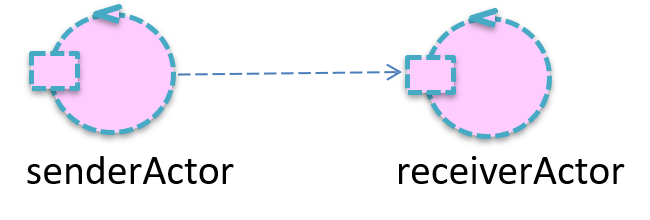

OVERVIEW
- Basic elements of any computation are data and functions (data can be also viewed as functions that return values).
- Functions are first class objects that have a type, can be assigned to variables and used as function arguments or as
return values.
- Computations almost always require the usage of threads and to face concurrency problems, even in multi-core environments.
- Lexical Closures are often used as callbacks in asynchronous (IO-bound) programming according to a Continuation Passing Style (CPS)
- The single-threaded event-loop model of Node.js (JavaScript) leads to the idea of message/job queue.
- On May 2019, Google announced that the
Kotlin programming language
is now its preferred language for Android app developers.
The Android OS is single threaded by default, which means operations will run by default on the UI thread except
they are explicitly scheduled to run on a background thread.
The UI thread is responsible for handling UI updates and executing long running operations on this thread can freeze your app,
or crash the app and show an ANR (Application Not Responding) error.
- The Kotlin concept of coroutine allows us to introduce thread in a very light way. The concept is based on the idea
of suspend a computation without blocking a thread (suspend function) implemented using (under the hoods) a state machine
and CPS.
- Kotlin channels promote interaction among coroutines in term of stream of values.
- Kotlin actors promote a message-based programming style that overcomes traditional procedure-call interaction without
loosing in performance.
To run the
KOTLIN experiments,
use an IDE or
Kotlin Playground.
You can consult also:
Kotlin online
For the examples hereunder, look at
demoBasic.kt (project
it.unibo.kotlinIntro).
Data, Types and Variables
val base : Int = 0 |
Immutable reference. |
var counter = 0 |
Mutable reference. The Type Int is inferred |
val name = "Bob"
val st ="hello$name"
------
println( st ) //Hello Bob
|
String template |
val data : String? = null
val v = data?.length ?: 0
------
println("v=$v") //0
|
Nullable type with safe null access
- String? nullable string
- ?. safe call operator
- ?: elvis operator: the right-hand side is evaluated only if the left-hand side is null
|
val v01 : Any = 23
------
println( "v01 is String=${v01 is String}") //v01 is String=false
println( "v01 is Int=${v01 is Int}") //v01 is Int=true
|
Type hierarchy.
- Any is is a non-nullable type that denotes the root of the Kotlin class hierarchy.
- Unit is used as a return type of a function that has nothing to return.
- is is a predefined check operator (like Java instanceOf)
|
val v02 : Any = "Bob"
val sv02 = v02 is String //boolean
val nv02 = v02 is Int //boolean
------
println( "v02 is String=${sv02}") //v02 is String=true
println( "v02 is Int=${nv02}") //v02 is Int=false
//val n = v02.length ERROR
if (v02 is String) print(v02.length) //3 Smart cast
|
Smart cast. The compiler tracks the is-checks (and explicit casts) for immutable values and inserts
(safe) casts automatically when needed.
|
val n02 = (v02 as String).length
------
println( "$n02") //3
//println( "${v02 as Int}") java.lang.ClassCastException
println( "${v02 as? Int}") //null
val t : Int = v02 as? Int ?: 100
------
println( "$t") //100
|
Explicit casting.
- The as operator performs type casting.
- The as? operator performs safe type casting.
- The ?: is the Elvis operator that provides default values instead of null.
|
val s1 = "a" //primitive type
var s2 = "a" //primitive type
------
println( "s1 === s2 : ${s1 === s2} ") //s1 === s2 : true
println( "s1 == s2 : ${s1 == s2} ") //s1 == s2 : true
------
s2 = "b"
println( "s1 === s2 : ${s1 === s2} ") //s1 === s2 : false
------
s2 = "a"
println( "s1 === s2 : ${s1 === s2} ") //s1 == s2 : true
------
val fa = java.io.File("a") //NON primitive type
val fb = java.io.File("a") //NON primitive type
println( "fa === fb : ${fa === fb}") //false
println( "fa == fb : ${fa == fb}") //true
|
Referential equality === : true when two references point to the same object.
For values represented by primitive types at runtime (for example, Int),
the === equality check is equivalent to the == check.
Structural equality == : translated into a call of the equals function of the class
|
val aToz = "a".."z"
val q = "q"
------
println( "q in aToz=${q in aToz}") //q in aToz=true
println( "1 in aToz=${"""1""" in aToz}") //1 in aToz=false
|
- Range created by the .. operator.
- The in infix operator performs a belong test.
- Triple quotes """ do not require escaping chars.
|
var arr = arrayOf(1,2,3)
------
println( "arr size=${arr.size}") //arr size=3
println( "firstEl=${arr[0]} lastEl=${arr[arr.size-1]}")
//firstEl=1 lastEl=3
------
arr.forEach { v -> print("arr $v ") }; println()
//arr 1 arr 2 arr 3
arr.forEach { print("$it") }; println() //1 2 3 - see later
|
|
Utility functions
For the examples hereunder, start from
demoTemplate.kt (project
it.unibo.kotlinIntro)
that introduces:
val cpus = Runtime.getRuntime().availableProcessors();
fun curThread() : String {
return "thread=${Thread.currentThread().name} / nthreads=${Thread.activeCount()}"
}
inline fun measureTimeMillis(block: () -> Unit): Long {
val start = System.currentTimeMillis()
block()
return System.currentTimeMillis() - start
}
Functions
These examples are reported in
demoFun.kt (project
it.unibo.kotlinIntro).
fun fsum(a:Int, b:Int) : Int {
return a+b
}
------
println( " ${fsum(3,6)} " ) //9
|
A Top-level function that returns a value.

|
var fcounter = 0
fun incCounter() : Unit{ fcounter++ }
fun decCounter() { fcounter-- }
------
println( "pre=$fcounter " ) //pre=0
incCounter()
println( "post=$fcounter " ) //post=1
|
Top-level functions that do not return a value. The return type Unit can be omitted
|
fun fsquare(v: Int) = v * v
------
println( fsquare(3) ) //9
|
One line function. Braces can be omitted. Return type can be omitted (it is inferred) |
val ftaction : () -> Unit
//function type (no args, returns nothing (Unit)
val ftsum : ( Int, Int) -> Int
//function type (two args, returns an Int)
val ftgreet: (String )-> ()->Unit
//returns another function
|
Function type is just a syntactic sugar for an interface, but the interface cannot be used explicitly.
We can use it to type local variables, properties or arguments.
It is implemented in Java as a FunctionN interface.
A way to provide a value function is to use a function literal:
- Lambda expression
- Anonymous function
|
val ftaction = { println("hello") } //lambda expr
ftaction() //hello
------
val ftsum = {x:Int, y:Int -> x+y} //lambda expr
val fva = ftsum(1,2)
println("fva=$fva") //fva=3
------
val ftgreet = { m: String -> { println(m)} }
println( ftgreet( "Hello!" ) ) //Function0<kotlin.Unit>
ftgreet( "Hello!" )() //Hello!
println( { println( "Welcome" ) }) //() -> kotlin.Unit
println( { println( "Welcome" ) }()) //Welcome kotlin.Unit
------
val fel = { print( "Last exp val:" ); 100 }
println( "${ fel() }" ) //Last exp val:100
fel() returns 100 but before executes print
|
Lambda Expression literal
it can be assigned to a variable, just like any other literal
(see Kotlin language specification: expressions).
A call returns (the value of the) last expression.
|
fun(){println("Hello-anonymous")} //Anonymous funct
println( fun(){println("Hello-anonymous")} )
//Function0<kotlin.Unit>
------
val faction=fun(){println("Hello-faction")} //type:()-> Unit
faction() //Hello-faction
------
val fsquare=fun(x) = x * x //Type: (Int)->Int
println("fsquare=${fsquare(3)}") //fsquare=9
------
val greet= fun(m:String) = fun(){ println("Printing $m") }
//Type:: (String) -> ()->Unit
println( greet )
//Function1<java.lang.String,
kotlin.jvm.functions.Function0<? extends kotlin.Unit>>
println(greet("Hello World1")) //Function0<kotlin.Unit>
greet( "Hello World2" )( ) //Printing Hello World2
------------------------------------------
fun fexec23( op: (Int, Int) : Int ) : Int { return op(2,3) }
val v23 = fexec23( fun(x:Int,y:Int):Int{return x+y} )
println("$v23") //5
println( fexec23( { x:Int, y:Int -> x*y } ) ) //6
println( fexec23(::fsum)) //5 See Function reference
|
Anonymous function
another way to write a block of code instead of a Lambda expression. Needs return
like any function |
Using lambda
Java 8 introduced lambda expressions along with functional interfaces..
A
functional interface
(see
Tutorial on Java Functional Interfaces)
is an interface with a single method. They are commonly referred to as
Single Abstract Method or
SAM.
A Java functional interface can be implemented by a Java
Lambda Expression
(see
Tutorial on Java Lambda Expressions).
The examples hereunder are reported in
demoLambda.kt (project
it.unibo.kotlinIntro).
fun exec23( op:(Int,Int) -> Int ) : Int { return op(2,3) }
val sum = { x:Int, y:Int -> x+y } //lambda expr
val mul = { x:Int, y:Int -> x*y } //lambda expr
println("${ exec23(sum) }") //5
println("${ exec23(mul) }") //6
|
Higher order functions

|
val v1 = exec23( { x:Int, y:Int -> x-y } ) //1) no shortcut
println("v1=$v1") //v1=-1
------
val v2 = exec23() { x:Int, y:Int -> x-y } //2) lambda last arg
println("v2=$v2") //v2=-1
------
val v3 = exec23{ x:Int, y:Int -> x-y } //3) () can be removed
println("v3=$v3") //v3=-1
------
val v4 = exec23{ x,y -> x-y } //4) arg types inferred
println("v4=$v4") //v4=-1
|
Lambda syntax shortcut |
fun p2( op:( Int ) -> Int) : Int { return op(2) }
println( p2( { x:Int-> x*x } ) ) //4 - no shortcut
println( p2( ) { x:Int-> x*x } ) //4 - lambda last arg
println( p2 { x:Int-> x*x } ) //4 - last arg no ()
println( p2 { x -> x*x } ) //4 - arg type inferred
-----------------------
println( p2{ it -> it } ) //2
println( p2{ it } ) //2
println( p2 { it -> it*it } ) //4
println( p2 { it*it } ) //4
println( p2{ it -18 / 9 } ) //0
println( p2{ it -18 } / 9) //-1 (int)
|
Simplification in lambda call
p2 { it*it }
The keyword it is an auto-generated parameter name |
fun modulo(k:Int): (Int) -> Int //SIGNATURE
= { it % k } //BODY
println( modulo(3) )
//Function1<java.lang.Integer, java.lang.Integer>
println( modulo(3)(5) ) //2
println( modulo(5)(3) ) //3
|
Function as return value

The modulo operation is a way to determine the remainder of a division operation |
|
|
fun sToN( s: String, base: Int=10 ) : Int{
var v = 0
for( i in 0..s.length-1 ) {
v = ( s[i].toInt()-48 ) + v*base
}
return v
}
println( " ${ sToN( s="123") } " ) //123
println( "${ sToN( s="123", 8) }" ) //83
|
Default parameters and Named parameters at call |
fun mirror(v: Int) : Pair<Int,Int> {
return Pair(v, -v)
}
------
val v = mirror(2)
println("${v.first}, ${v.second} ") //2,-2
------
val(pos,neg) = mirror(3)
println( " pos=$pos neg=$neg " ) //pos=3 neg=-3
|
Multiple return values. To extract the values into separate values, we can exploit
destructuring declarations
(syntactic sugar)
val(pos,neg) = mirror(3)
|
val sToNref = ::sToN
println( sToNref )
//fun sToN(kotlin.String, kotlin.Int): kotlin.Int
-------------------------
fun add( x:Int, y:Int ) : Int { return x+y }
println( exec23( ::add ) ) //5
val x = (::add)(5,6) //call using a funref
println( x ) //11
|
Function reference
The :: operator creates a member reference or a (statically known) class reference.
The reference is a value of type KClass.
A Kotlin class reference is not the same as a Java class reference. To obtain a Java class reference,
use the .java property on a KClass instance.
|
var str = "Hello World"
str.let { println("$it!!") } //Hello World!!
137.let { println("$it!!") } //137!!
|
Standard library function let
let takes the object it is invoked upon as the parameter and returns the result of the lambda expression.
It is a
scope function,
wherein the variables declared inside the expression cannot be used outside.
|
fun testRunFunction() {
val logo = "Starting"
val v1 = run {
println("First start:$logo ${curThread()}")
val logo = "First" //local
println("First ended : $logo")
}
val v2 = run {
println("Second start:$logo ${curThread()}")
val logo = "Second" //local
println("Second ended: $logo ")
}
println("logo=$logo v1=$v1 v2=$v2" )
}
testRunFunction()
|
Standard library function run
run calls the specified function block and returns its result.
It is a combination of with and
let
scope library functions.
Similar to the let function, the run function returns the last statement.
Unlike let, the run function doesn’t supports the it keyword.
//OUTPUT
First start:Starting thread=main | nthreads=2
First ended : First
Second start:Starting thread=main | nthreads=2
Second ended: Second
logo=Starting v1=kotlin.Unit v2=kotlin.Unit
|
Closures, Callbacks and CPS
These examples are reported in
demoCps.kt (project
it.unibo.kotlinIntro).
fun counterCreate() : ( cmd : String ) -> Int {
var localCounter = 0
return { msg ->
when (msg) {
"inc" -> ++localCounter
"dec" -> --localCounter
"val" -> localCounter
else -> throw Exception( "unknown" )
}
}
}
------
val c1 = counterCreate()
println( c1("val") ) //0
for( i in 1..3 ) c1("inc")
println("c1=${c1("val")}") //c1=3
------
val c2 = counterCreate() //another instance
for( i in 1..3 ) c2("dec")
println("c2=${c2("val")}") //c2=-3
|
Lexical Closures
The closure returned by counterCreate is "closed over" the variable localCounter.
We are reproducing oo programming style (instance and state encapsulation) |
fun showAction( msg: String ){
println( msg )
}
fun readAction() : String{
println("readaction ... | ${curThread()}")
return "myinput" //SIMULATE to acquire input
}
fun evalAction( v: Int, msg: String ) : String{
println("evalaction ... | v=$v ${curThread()}")
return "$msg:$v"
}
fun doJobNormal(n:Int){ //print- eval-read pattern
showAction( evalAction( n,readAction() ) )
}
-----------------------
doJobNormal(10) //output : myinput:100
}
|
Normal flow
With reference to the set of functions on the left, let us execute a Normal call sequence:
The output is:
//OUPUT
readaction ... | thread=main | nthreads=2
evalaction ... | v=10 thread=main | nthreads=2
myinput:10
|
fun readCps( callback:( String )-> Unit ) :Unit {
println("readCps ... | ${curThread()}")
callback( "myinputcps" )
}
---------------------
readCps( { msg -> showAction(msg) }
readCps( showAction(it) } //using lambda shortcut
|
are quite common in event-loop architectures such as
JavaScript /
Node.js.
The idea is to pass one function as a parameter to another function, and have this one invoked once the process has completed.
//OUPUT
readCps ... | thread=main | nthreads=2
myinputcps
The usage of callbacks leads to the
Continuation-passing style (see CPS),
which is quite diffused to handle
Asynchronous I/O
|
fun readCps( callback:(String)-> Unit ):Unit{
println("readCps ... | ${curThread()}")
callback( "myinputcps" )
}
fun evalCps(v:Int, msg:String, callback:(String)-> Unit ){
println("evalCps ... | ${curThread()}")
callback( "$msg: $v" )
}
fun doJobCpsNoShortcut( n: Int ){
readCps( //lambda
{ input : String-> evalCps( n, input, {//lambda
msg -> showAction( msg )
}
)}//evalCps
)//readCps
}
fun doJobCps( n: Int ){ //using lambda shortcut
readCps{ evalCps( n, it) { showAction( it )} }
}
---------------------
doJobCps( 10 }
|
CPS (Continuation Passing Style)
The example on the left trasforms the normal print-eval-read pattern into a
pattern read-and-after-do
//OUPUT
readCps ... | thread=main | nthreads=2
evalCps ... | thread=main | nthreads=2
myinputcps:10
Callback hell
In order to avoid the anti-pattern known as
callback hell, people use other approaches such as
futures / promises or
Reactive Extensions (Rx)
(from C#, .NET) .
|
Towards Asynchronous Programming
This example is reported in
demoCpsAsynch.kt
(project
it.unibo.kotlinIntro).
|
Let us suppose that the operation readCps takes a long time and that we do not want to block
the computation. |
As a solution, modern langauages do introduce:
- Threading
- Callbacks
- futures / promises
- Reactive Extensions (Rx)
- Coroutines
|
As an example of CPS in
Asynchronous programming,
let us simulate here the readCpsAsynch operation as an activity that runs in its own thread and ends after 3 sec.
fun readCpsAsynch( callback:(String)-> Unit ) : Unit{
kotlin.concurrent.thread(start = true) {
println("readCpsAsynch ... | ${curThread()} ")
Thread.sleep(3000) //Long-term action
println("readCpsAsynch done")
callback( "myinputasynchcps" )
}
}
fun doJobAsynchCps( n: Int ){
readCpsAsynch{ evalCps( n, it) { showAction( it )}}
println("Here I can do other jobs ... ")
}
The package kotlin.concurrent includes
utility functions for concurrent programming.
The function kotlin.concurrent.thread creates a thread that runs the specified
block
of code.
--------------------------
doJobAsynchCps( 10 )
|
ASYNCHRONOUS PROGRAMMING WITH CPS
Now, the main program ends immediately; the computation is executed in the thread activated for the input.
//OUPUT
BEGINS CPU=4 thread=main | nthreads=2
Here I can do other jobs ...
readCpsAsynch ... | thread=Thread-0 / nthreads=3
work done in time= 4
ENDS thread=main | nthreads=2
readCpsAsynch done
evalCps ... | thread=Thread-0 | nthreads=3
myinputasynchcps:10
Note the Single Abstract Method conversion
(SAM) in kotlin.concurrent.thread: when an object implements a SAM interface, we can pass a lambda instead.
|
Introduction to coroutines
Overview (see also
Elizarov video)
- A function can be activated as a coroutine, i.e. as a a sort of 'light-weight thread'.
- A coroutine can invoke other functions; it can also suspend its behavior (without blocking its running thread).
- Interaction among concurrent activities (coroutines) can be
supported by channels that provide suspensive send/receive operations.
- Combining a coroutine with a channel to communicate with other coroutines makes the idea of
kotlin actor.
- Essentially, a
Coroutine
is a light-weight thread that can be activated with a
Coroutine builder
into a
CoroutineScope.
-
Coroutines can be executed concurrently using a multi-threaded
CoroutineDispatcher
like the
Dispatchers.Default.
It presents all the usual concurrency problems.
See Kotlin Shared mutable state and concurrency.
- By default, coroutines are run on a shared pool of threads.
Threads still exist in a program based on coroutines, but one thread can run many coroutines, so there's no need for too many threads.

-
Kotlin Coroutines enhance Asynchronous programming
by being lightweight and essentially faster than a thread as they are stackless.
What this means from a multiprocessing perspective, is that Kotlin Coroutines don't map on the native CPU thread,
hence there's no context-switching on the processor.
- The execution of a coroutine always happens inside a
CoroutineContext
that defines how the coroutine will be executed.
It includes a coroutine Dispatcher.
A Coroutine Context can be composed by several element types.
-
Every coroutine has a context that is represented by an instance of
CoroutineContext interface.
A context is a set of elements and current coroutine context is available via coroutineContext property.
A scope is just a reference to a context.
- Coroutines are computations that can be suspended without blocking a thread.
They are based on the concept of Continuation-passing style (CPS) programming.

- Coroutines do not rely on features of the Operating System or the JVM. Instead, a Continuation is added to every suspending function as
an additional parameter according to the CPS style. The compiler produces a state machine to handle suspension.
-
A coroutine itself is represented by a
Job.
It is responsible for coroutine's lifecycle, cancellation, and parent-child relations.
A current job can be retrieved from a current coroutine's context.
Examples
The examples hereunder are reported in
demoCoroutinesIntro.kt
(project
it.unibo.kotlinIntro).
The main program now waits for a command from the user to select the demo to run:
var demoTodo : () -> Unit = { println("nothing to do") }
fun readInt() : Int { print(">"); return readLine()!!.toInt() }
fun doDemo( input : Int ){
println("BEGINS CPU=$cpus ${curThread()}")
when( input ){
1 -> demoTodo = { runBlockThread() }
2 -> demoTodo = { thcounter=0; GlobalScope.launch{ runBlockThread() } }
3 -> demoTodo = { scopeDemo() }
4 -> demoTodo = { manyThreads() }
5 -> demoTodo = { manyCoroutines() }
...
else -> { println("command unknown") } //Note the block
}
println( "work done in time= ${measureTimeMillis( demoTodo )}" )
println("ENDS ${curThread()}")
}
fun main() {
var input = readInt()
while( input != 0 ){
doDemo( input )
demoTodo = { println("nothing to do") }
input = readInt()
}
println( "BYE")
}
Conventional (Java) code
var thcounter=0
fun runBlockThread( delay : Long = 0L ){
//println("thread sleeps ... : ${curThread()}")
Thread.sleep(delay)
thcounter++ //thcounter = thcounter + 1 NON ATOMICA
println("thread ends : ${curThread()} thcounter=${thcounter}")
}
------------------
runBlockThread(1500 ) //user-option 1
|
The current Thread (main) waits for 1500 msecs.
//OUTPUT
BEGINS CPU=4 thread=main | nthreads=2
thread ends : thread=main | nthreads=2 thcounter=1
work done in time= 1514
ENDS thread=main | nthreads=2
|
GlobalScope.launch is used to launch top-level coroutines, which operate on the whole application lifetime.
GlobalScope.launch{ runBlockThread() } //user-option 2
|
The runBlockThread is now called in the default Thread devoted to Coroutine execution.
//OUTPUT
BEGINS CPU=4 thread=main | nthreads=2
work done in time= 0
ENDS thread=main | nthreads=4
>thread ends : thread= DefaultDispatcher-worker-1 | nthreads=5 thcounter=1
Note that the 'program' ends immediately.
The output after > appears since our main waits for input.
|
The example above shows that the coroutine works with reference to the Dispather.Deafault.
A Dispatcher
determines the thread in which a coroutine will be executed. It can be provided by the
Coroutine Scope or specified using a builder.
A dispatcher can be provided in two ways:
- By the.
CoroutineScope
- Explicitly: the coroutine builder receives a coroutine context as a first parameter.
|
defines a
Scope for new coroutines.
Every coroutine builder is an extension on
CoroutineScope and inherits its
coroutineContext
to automatically propagate both context elements and cancellation.
Launch and join
Coroutines started by launch return a Job
immediately, which we can use to cancel
the computation or wait its completion with join.
|
runBlocking
runBlocking is a Coroutine Builder wrapper that runs new coroutine and blocks current thread interruptibly until its completion.
Using launch, the coroutine is launched in the
scope of the outer coroutine (that of runBlocking in this case).
fun demoRunBlocking1(){ //user-option 6
runBlocking {
println("Before run2 ${curThread()}")
val job = launch{ runBlockThread(2000) }
println("Just after launch ${curThread()}")
job.join()
println("After job ${curThread()}")
}
println("Ends run2 ${curThread()}")
}
|
No Thread.sleep tis required now.
//OUTPUT
BEGINS CPU=8 thread=main / nthreads=2
Before run2 thread=main / nthreads=2
Just after launch thread=main / nthreads=2
After job thread=main / nthreads=2
Ends run2 thread=main / nthreads=2
work done in time= 2031
ENDS thread=main / nthreads=2
>
Since we use launch instead of GlobalScope.launch, then the coroutine is launched in the
scope of the outer runBlocking coroutine.
|
fun demoRunBlocking2(){ //user-option 7
runBlocking {
println("Before run1 ${curThread()}")
launch{ runBlockThread(2000) }
println("Just after launch ${curThread()}")
}
println("Ends run1 ${curThread()}")
}
|
//OUTPUT
BEGINS CPU=8 thread=main / nthreads=2
Before run1 thread=main / nthreads=2
Just after launch thread=main / nthreads=2
Ends run1 thread=main / nthreads=2
work done in time= 2023
ENDS thread=main / nthreads=2
>
The runBlocking won't complete before all of its
child coroutines finish.
|
fun scopeDemo (){ //user-option 3
thcounter=0
val scope = CoroutineScope( Dispatchers.Default )
println( scope.coroutineContext )
val job = scope.launch{
println("start coroutine 1 ${curThread()}")
runBlockThread(3000)
println("end coroutine 1 ${curThread()}")
}
//job.join()
// should be called only from a coroutine or another suspend function
scope.launch{
println("start coroutine 2 ${curThread()}")
job.join()
println("end coroutine 2 ${curThread()}")
}
}
|
The runBlockThread is now called in a new Coroutine scope.
//OUTPUT
BEGINS CPU=8 thread=main / nthreads=2
[JobImpl{Active}@567d299b, DefaultDispatcher]
start coroutine 1 thread=DefaultDispatcher-worker-1 / nthreads=5
work done in time= 35
ENDS thread=main / nthreads=5
start coroutine 2 thread=DefaultDispatcher-worker-2 / nthreads=6
>end coroutine 1 thread=DefaultDispatcher-worker-1 / nthreads=6
end coroutine 2 thread=DefaultDispatcher-worker-1 / nthreads=6
|
fun workTodo(i : Int) { println("hello $i ${curThread()}") }
suspend fun runInScope(
scope:CoroutineScope=CoroutineScope(Dispatchers.IO))
){
var job = mutableListOf()
for (i in 1..6){
job.add( scope.launch{
delay(1000L/i);
workTodo(i) } )
}//for
job.forEach { it.join() }
}
@ObsoleteCoroutinesApi
fun main() = runBlocking {
println("BEGINS CPU=$cpus ${curThread()}")
println("Run in current context ")
runInScope( this )
//println("Run in new context ")
//runInScope( )
println("ENDS ${curThread()}")
}
|
//OUTPUT ( runInScope( this ) )
BEGINS CPU=8 thread=main / nthreads=2
Run in current context
hello 6 thread=main / nthreads=2
hello 5 thread=main / nthreads=2
hello 4 thread=main / nthreads=2
hello 3 thread=main / nthreads=2
hello 2 thread=main / nthreads=2
hello 1 thread=main / nthreads=2
ENDS thread=main / nthreads=2
------------------------------
//OUTPUT ( runInScope( ) )
BEGINS CPU=8 thread=main / nthreads=2
Run in new scope
hello 6 thread=DefaultDispatcher-worker-8 / nthreads=11
hello 5 thread=DefaultDispatcher-worker-1 / nthreads=11
hello 4 thread=DefaultDispatcher-worker-1 / nthreads=12
hello 3 thread=DefaultDispatcher-worker-4 / nthreads=12
hello 2 thread=DefaultDispatcher-worker-8 / nthreads=12
hello 1 thread=DefaultDispatcher-worker-1 / nthreads=12
ENDS thread=main / nthreads=12
|
A closer look to coroutines
From
Elizarov we know that:
var thcounter=0
var maxNumThread = 0;
fun runBlockThread( delay : Long = 0L ){
Thread.sleep( delay )
val nt = Thread.activeCount()
if( maxNumThread < nt ) maxNumThread = nt
thcounter++
}
val n=10000 //number of Thread or Coroutines to launch
val k=1000 //times an action is repeated by each Thread or Coroutine
fun manyThreads(){ //user-option 4
thcounter=0
val time = measureTimeMillis{
val jobs = List(n){
kotlin.concurrent.thread(start = true) {
repeat( k ){ runBlockThread() }
}
}
jobs.forEach{it.join()} //wait for termination of all threads
}
println("manyThreads time= $time thcounter=$thcounter")
}
|
Many Threads
The function manyThreads activates n=10000 threads; each thread increments a global counter
k=1000 times.
//OUTPUT
BEGINS CPU=4 thread=main | nthreads=2
manyThreads time= 14811 counter=9924712 maxNumThread=100
work done in time= 14812
ENDS thread=main | nthreads=2
Question: why the final value of the thcounter is not n*k = 10000000?.
|
fun manyCoroutines(){ //user-option 5
//val d = newSingleThreadContext("single")
val d = newFixedThreadPoolContext(10,"d")
//val d = Dispatchers.Default
val scope = CoroutineScope( d )
var thcounter=0
val time = measureTimeMillis {
val jobs = List(n) { scope.launch{ repeat(k) { runBlockThread() } } }
jobs.forEach { it.join() } //wait for termination of all coroutines
}
println("manyCoroutines time= $time counter=$counter")
}
|
Many Coroutines
The function manyCoroutines activates n=10000 coroutines; each coroutine increments a global counter
k=1000 times.
//OUTPUT (Dispatchers.Default)
BEGINS CPU=4 thread=main | nthreads=1
work done in time= 11
ENDS thread=main | nthreads=3
>manyCoroutines time= 4271 thcounter=9478141 maxNumThread=14
The execution time is now much less than the case of using threads.
//OUTPUT (newSingleThreadContext)
BEGINS CPU=12 thread=main / nthreads=2
work done in time= 9
ENDS thread=main / nthreads=3
>manyCoroutines time= 1397 thcounter=10000000 maxNumThread=3
Question: why the final value of the thcounter is now n*k = 10000000?.
|
fun scopeAsyncDemo(){ //user-option 8
val scope = CoroutineScope( Dispatchers.Default )
val res : Deferred<String> = scope.async{
println("async starts")
delay(2000) //See delay
"hello from async"
}
scope.launch{
println("starts to wait result")
val r = res.await();
//must be called only from a coroutine or a suspend function
println("result= ${r}")
}
}
|
CoroutineScope.async:
creates a coroutine and returns its future result as an implementation of
Deferred.
//OUTPUT
BEGINS CPU=8 thread=main / nthreads=2
async starts
work done in time= 30
ENDS thread=main / nthreads=5
starts to wait result ...
>result= hello from async
|
Dispatchers
- Coroutine dispatcher can confine coroutine execution to a specific thread, dispatch it to a thread pool,
or let it run unconfined.
- Coroutines can be executed concurrently using a multi-threaded dispatcher.
- Coroutines can suspend on one thread and resume on another thread.
The examples hereunder are reported in
demoDispatchers.kt
(project
it.unibo.kotlinIntro).
@kotlinx.coroutines.ObsoleteCoroutinesApi
@kotlinx.coroutines.ExperimentalCoroutinesApi
fun testDispatchers(n : Int, scope: CoroutineScope) {
if( n== 1 ){
runBlocking {
launch { //context of the parent runBlocking
delay(500)
println("1_a) runBlocking | ${curThread()}")
}
launch { //context of the parent runBlocking
println("1_b) runBlocking | ${curThread()}")
}
}
}
if( n== 2 ) {
val dispatcher = Dispatchers.Default
scope.launch(dispatcher) {
delay(500)
println("2_a) Default | ${curThread()}")
}
scope.launch(dispatcher) {
println("2_b) Default | ${curThread()}")
}
}
if( n== 3 ){
val dispatcher = newSingleThreadContext("MyThr")
scope.launch( dispatcher ) {
delay(500)
println("3-a) newSingleThreadContext | ${curThread()}")
}
scope.launch( dispatcher ) {
println("3-b) newSingleThreadContext | ${curThread()}")
}
}
if( n== 4 ) {
val dispatcher = Dispatchers.IO
scope.launch(dispatcher) {
delay(500)
println("4_a) Dispatchers.IO | ${curThread()}")
}
scope.launch(dispatcher) {
println("4_b) Dispatchers.IO | ${curThread()}")
}
}
if( n== 5 ) {
val dispatcher = Dispatchers.Unconfined
scope.launch(dispatcher) {
delay(500)
println("5_a) Unconfined | ${curThread()}")
}
scope.launch(dispatcher) {
println("5_b) Unconfined | ${curThread()}")
}
}
if( n== 6 ) { //Working in a new scope and in the given one
val myscope = CoroutineScope(Dispatchers.Default)
scope.launch { delay(1000); println("just to avoid premature main end") }
val job1 = myscope.launch {
delay(500)
println("2_a) Default | ${curThread()}")
}
myscope.launch {
//job1.join()
println("2_b) Default | ${curThread()}")
}
}
if( n== 7 ) { //Working in a new scope only
val myscope = CoroutineScope(Dispatchers.Default)
myscope.launch{
delay(500)
println("2_a) Default | ${curThread()}")
}
myscope.launch{
println("2_b) Default | ${curThread()}")
}
}
}
|
fun main(){
println("BEGINS CPU=$cpus ${curThread()}")
runBlocking {
testDispatchers(0, this)
//testDispatchers(1, this)
//testDispatchers(2, this)
//testDispatchers(3, this)
//testDispatchers(4, this)
//testDispatchers(5, this)
//testDispatchers(6, this)
//testDispatchers(7, this)
}
println("ENDS ${curThread()}")
}
Dispatchers
-
Main: included in UI related coroutine libraries.
-
Default: for CPU-intensive tasks.
-
newSingleThreadContext creates a new thread for the coroutine to run.
-
IO: IO-intensive tasks waiting for an answer from another system.
-
Unconfined: not confined -- will work with main thread (don’t use it unless you’re very sure of what you’re doing).
//OUPUT (run one at the time)
//testDispatchers(0, this)
BEGINS CPU=12 thread=main / nthreads=2
0_b) runBlocking | thread=main / nthreads=2
0_a) runBlocking | thread=main / nthreads=2
ENDS thread=main / nthreads=2
//testDispatchers(1, this)
BEGINS CPU=12 thread=main / nthreads=2
1_b) runBlocking | thread=main / nthreads=2
1_a) runBlocking | thread=main / nthreads=2
ENDS thread=main / nthreads=2
//testDispatchers(2, this)
BEGINS CPU=12 thread=main / nthreads=2
2_b) Default | thread=DefaultDispatcher-worker-3 / nthreads=5
2_a) Default | thread=DefaultDispatcher-worker-1 / nthreads=6
ENDS thread=main / nthreads=6
//testDispatchers(3, this)
BEGINS CPU=12 thread=main / nthreads=2
3-b) newSingleThreadContext | thread=MyThr / nthreads=3
3-a) newSingleThreadContext | thread=MyThr / nthreads=3
ENDS thread=main / nthreads=3
//testDispatchers(4, this)
BEGINS CPU=12 thread=main / nthreads=2
4_b) Dispatchers.IO | thread=DefaultDispatcher-worker-2 / nthreads=5
4_a) Dispatchers.IO | thread=DefaultDispatcher-worker-1 / nthreads=7
ENDS thread=main / nthreads=7
//testDispatchers(5, this)
BEGINS CPU=12 thread=main / nthreads=2
5_b) Unconfined | thread=main / nthreads=3
5_a) Unconfined | thread=kotlinx.coroutines.DefaultExecutor / nthreads=3
ENDS thread=main / nthreads=3
//testDispatchers(6, this)
BEGINS CPU=12 thread=main / nthreads=2
2_b) Default | thread=DefaultDispatcher-worker-3 / nthreads=5
2_a) Default | thread=DefaultDispatcher-worker-1 / nthreads=6
just to avoid premature main end
ENDS thread=main / nthreads=6
//testDispatchers(7, this)
BEGINS CPU=12 thread=main / nthreads=2
2_b) Default | thread=DefaultDispatcher-worker-3 / nthreads=5
ENDS thread=main / nthreads=5
|
Suspending functions
A suspending function is just a regular Kotlin function with an additional
suspend modifier which indicates that
the function can suspend the execution of a coroutine.

Suspending functions can invoke any other regular functions, but to actually suspend the execution, it has to be another suspending function.
The examples hereunder are reported in
demoSuspended.kt
(project
it.unibo.kotlinIntro).
delay
Kotlin delay
is a special suspending function that does not block a thread, but suspends the work.
suspend fun ioBoundFun(dt: Long = 1000L) : Long{
val time = measureTimeMillis{
println("ioBoundFun | dt=$dt STARTS in ${curThread()}")
delay(dt)
}
val res = dt/10
println("ioBoundFun | dt=$dt res=$res ${curThread()} TIME=$time")
return res
}
fun main(){
println("BEGINS CPU=$cpus ${curThread()}")
run1()
//run2()
//run3()
println("ENDS ${curThread()}")
}
|
fun run1(){ runBlocking { ioBoundFun() } }
//OUTPUT
BEGINS CPU=12 thread=main / nthreads=2
ioBoundFun | dt=1000 STARTS in thread=main / nthreads=2
ioBoundFun | dt=1000 res=100 thread=main / nthreads=2 TIME=1017
ENDS thread=main / nthreads=2
fun run2(){
val myScope=CoroutineScope(newSingleThreadContext("single"))
myScope.launch{ ioBoundFun(500L) }
runBlocking { ioBoundFun() }
myScope.launch{ ioBoundFun(300L) }
}
//OUTPUT
BEGINS CPU=12 thread=main / nthreads=2
ioBoundFun | dt=1000 STARTS in thread=main / nthreads=3
ioBoundFun | dt=500 STARTS in thread=single / nthreads=3
ioBoundFun | dt=500 res=50 thread=single / nthreads=3 TIME=506
ioBoundFun | dt=1000 res=100 thread=main / nthreads=3 TIME=1003
ENDS thread=main / nthreads=3
ioBoundFun | dt=300 STARTS in thread=single / nthreads=3
//!!! The main ends before the termination of the last ioBoundFun
|
Coroutine builder async
The
async
coroutine builder creates new coroutine and returns a
promise,
(of type Deferred
in Kotlin): it promises to compute a value which we can wait for or request at any time.
fun activate(mainscope : CoroutineScope){
val myscope = CoroutineScope( newSingleThreadContext("t1"))
val job1 = myscope.async { ioBoundFun(500L) }
val job2 = myscope.async{ ioBoundFun(300L) }
mainscope.launch {
if (!job1.isCompleted || !job2.isCompleted) println("Waiting for completion")
val end1 = job1.await() //only from a coroutine or another suspend
val end2 = job2.await()
println("All jobs done; end1=$end1 end2=$end2")
}
}
|
The method await on the promise allows us to get the value.
fun run3(){ runBlocking{ activate(this) }}
//OUPUT
BEGINS CPU=12 thread=main / nthreads=2
ioBoundFun | dt=500 STARTS in thread=t1 / nthreads=3
ioBoundFun | dt=300 STARTS in thread=t1 / nthreads=3
Waiting for completion
ioBoundFun | dt=300 res=3 0 thread=t1 / nthreads=3 TIME=309
ioBoundFun | dt=500 res=50 thread=t1 / nthreads=3 TIME=513
All jobs done; end1=50 end2=30
ENDS thread=main / nthreads=3
There is a laziness option to async using an optional start parameter with a value of CoroutineStart.LAZY.
It starts coroutine only when its result is needed by some await or if a start function is invoked.
See also
Composing Suspending Functions
|
Kotlin Channels
- Kotlin Channels
(see also
Kotlin Channels
in Kotlin Hands-On)
provide a way to transfer a streams of values.

-
A
Channel is conceptually very similar to BlockingQueue.
One key difference is that instead of a blocking put operation it has a suspending send,
and instead of a blocking take operation it has a suspending receive.
They are used for providing and consuming objects from the channel, implemented with a FIFO
strategy.

- The sender is suspended when the channel is full
and resumes as soon as the receiver consumes the data. This concept is often referred to as
Backpressure (Reactive Manifesto Glossary)
and helps to prevent a channel from being flooded with more elements than the receivers can actually process.
-
Kotlin defines several types of channels:
Unbuffered Channels:
- RendezvousChannel (the buffer has capacity 0 and the sender suspends until the element is consumed)
Buffered Channels:
- LinkedListChannel
- ArrayChannel
- ConflatedChannel (the buffer has capacity 1 and the sender overrides an element not cosumed)
The examples hereunder are reported in
demoChannels.kt (project
it.unibo.kotlinIntro).
suspend fun channelTest(scope : CoroutineScope){
val n = 5
val channel = Channel<Int>(2) //ArrayChannel capacity=2 size=0
val sender = scope.launch {
println( channel )
repeat( n ) {
channel.send( it )
println("SENDER | sent $it in ${curThread()}")
}
}
delay(500) //The receiver starts after a while ...
val receiver = scope.launch {
for( i in 1..n ) {
val v = channel.receive()
println("RECEIVER | receives $v in ${curThread()}")
}
}
}
fun main() {
println("BEGINS CPU=$cpus ${curThread()}")
runBlocking {
channelTest(this)
println("ENDS runBockig ${curThread()}")
}
println("ENDS main ${curThread()}")
}
|
The example shows the usage of an ArrayChannel of capacity 2.
//OUTPUT
BEGINS CPU=8 thread=main / nthreads=2
ArrayChannel@198e2867{EmptyQueue}(buffer:capacity=2,size=0)
SENDER | sent 0 in thread=main / nthreads=2
SENDER | sent 1 in thread=main / nthreads=2
ENDS runBockig thread=main / nthreads=2
RECEIVER | receives 0 in thread=main / nthreads=2
RECEIVER | receives 1 in thread=main / nthreads=2
RECEIVER | receives 2 in thread=main / nthreads=2
SENDER | sent 2 in thread=main / nthreads=2
SENDER | sent 3 in thread=main / nthreads=2
SENDER | sent 4 in thread=main / nthreads=2
RECEIVER | receives 3 in thread=main / nthreads=2
RECEIVER | receives 4 in thread=main / nthreads=2
ENDS main thread=main / nthreads=2
//OUTPUT wihout delay(500)
BEGINS CPU=8 thread=main / nthreads=2
ArrayChannel@2a098129{EmptyQueue}(buffer:capacity=2,size=0)
ENDS runBockig thread=main / nthreads=2
SENDER | sent 0 in thread=main / nthreads=2
SENDER | sent 1 in thread=main / nthreads=2
RECEIVER | receives 0 in thread=main / nthreads=2
RECEIVER | receives 1 in thread=main / nthreads=2
RECEIVER | receives 2 in thread=main / nthreads=2
SENDER | sent 2 in thread=main / nthreads=2
SENDER | sent 3 in thread=main / nthreads=2
SENDER | sent 4 in thread=main / nthreads=2
RECEIVER | receives 3 in thread=main / nthreads=2
RECEIVER | receives 4 in thread=main / nthreads=2
ENDS main thread=main / nthreads=2
|
Producers-consumers in Kotlin
- The pattern where a coroutine is producing a sequence of elements is quite common.
This is a part of producer-consumer pattern that is often found in concurrent code.
You could abstract such a producer into a function that takes channel as its parameter,
but this goes contrary to common sense that results must be returned from functions.
- There is a convenient coroutine builder named
produce
that makes it easy to do it right on producer side,
and an Extension function
consumeEach, that replaces a for loop on the consumer side.
- The coroutine builder
produce
is associated with the channel that it sends elements to (a
ReceiveChannel
interface) requires a specific CoroutineContext (as with launch or async) and works as follows:
- suspends after a value is produced and resumes when a new value is requested (similar to suspending sequences and iterators)
- the body of the suspending lambda that is passed can suspend at any point
- a value from a producer can only be received in a suspending computation
- the channel has no buffer by default; it is closed when the coroutine completes
Coroutine builder
produce
val dispatcher = newSingleThreadContext("myThread")//Dispatchers.IO
lateinit var simpleProducer : ReceiveChannel<Int>
fun startProducer(scope : CoroutineScope ){
simpleProducer = scope.produce(dispatcher, capacity=0){//capacity=2
for( i in 1..4 ){
println("producer PRE -> $i in ${curThread()}")
send( i )
println("producer POST-> $i at ${System.currentTimeMillis()}")
}
}
suspend fun consume(){
val v = simpleProducer.receive() //Get the first
println( "consume- first ${v} at ${System.currentTimeMillis()} in ${curThread()}")
simpleProducer.consumeEach {
println( "consume- $it at ${System.currentTimeMillis()} in ${curThread()}" )
}
}
fun main() {
println("BEGINS CPU=$cpus ${kotlindemo.curThread()}")
runBlocking {
startProducer(this)
consume()
println("ENDS runBlocking ${kotlindemo.curThread()}")
}
println("ENDS main ${kotlindemo.curThread()}")
}
|
This example is reported in simpleProducerKotlin.kt
- The ReceiveChannel has only the receive method. It does not have a send method.
This means that another coroutine can only read from this output channel.
- The channel has no buffer by default; it is closed when the coroutine completes.
- The coroutine builder produce
takes a suspending lambda as a parameter; only the code within this lambda can send items to the channel.
//OUTPUT (singleThread, capacity=0)
producer PRE -> 1 in thread=myThread / nthreads=3
producer POST-> 1 at 1618394375343
producer PRE -> 2 in thread=myThread / nthreads=3
consume- first 1 at 1618394375344 in thread=main / nthreads=3
consume- 2 at 1618394375345 in thread=main / nthreads=3
producer POST-> 2 at 1618394375345
producer PRE -> 3 in thread=myThread / nthreads=3
consume- 3 at 1618394375346 in thread=main / nthreads=3
producer POST-> 3 at 1618394375346
producer PRE -> 4 in thread=myThread / nthreads=3
producer POST-> 4 at 1618394375346
consume- 4 at 1618394375351 in thread=main / nthreads=3
ENDS runBlocking thread=main / nthreads=3
ENDS main thread=main / nthreads=3
//OUTPUT (singleThread, capacity=2)
BEGINS CPU=8 thread=main / nthreads=2
producer PRE -> 1 in thread=myThread / nthreads=3
producer POST-> 1 at 1618394697274
producer PRE -> 2 in thread=myThread / nthreads=3
producer POST-> 2 at 1618394697274
producer PRE -> 3 in thread=myThread / nthreads=3
consume- first 1 at 1618394697283 in thread=main / nthreads=3
producer POST-> 3 at 1618394697285
producer PRE -> 4 in thread=myThread / nthreads=3
consume- 2 at 1618394697285 in thread=main / nthreads=3
consume- 3 at 1618394697286 in thread=main / nthreads=3
consume- 4 at 1618394697286 in thread=main / nthreads=3
producer POST-> 4 at 1618394697286
ENDS runBlocking thread=main / nthreads=3
ENDS main thread=main / nthreads=3
|
Many-type producer
val context = newSingleThreadContext("myThread")
lateinit var producer : ReceiveChannel<Any> //postponed initialization
fun createProducer(scope : CoroutineScope ){
producer = scope.produce(context, capacity=0){ //capacity=1
send(5.2)
println( "producer sent 5.2 in ${curThread()}")
send("a")
println( "producer sent a in ${curThread()}")
send(100)
println( "producer sent 100 in ${curThread()}")
}
}
suspend fun doconsume(){
val v = producer.receive() //the first item
println( "doconsume receives1 $v in ${curThread()}")
producer.consumeEach {
println( "doconsume receives2 $it in ${curThread()}") }
}
fun main() {
println("BEGINS CPU=$cpus ${kotlindemo.curThread()}")
runBlocking {
createProducer(this);
doconsume()
println("ENDS runBlocking ${kotlindemo.curThread()}")
}
println("ENDS main ${kotlindemo.curThread()}")
}
|
This example is reported in prodConsKotlin.kt
When channel capacity = 0 (default), the output is:
//OUTPUT
BEGINS CPU=12 thread=main / nthreads=2
doconsume receives1 5.2 in thread=main / nthreads=3
producer sent 5.2 in thread=myThread / nthreads=3
doconsume receives2 a in thread=main / nthreads=3
producer sent a in thread=myThread / nthreads=3
doconsume receives2 100 in thread=main / nthreads=3
producer sent 100 in thread=myThread / nthreads=3
ENDS runBlocking thread=main / nthreads=3
ENDS main thread=main / nthreads=3
When channel capacity = 1, the output is:
//OUTPUT
BEGINS CPU=12 thread=main / nthreads=2
producer sent 5.2 in thread=myThread / nthreads=3
producer sent a in thread=myThread / nthreads=3
doconsume receives1 5.2 in thread=main / nthreads=3
doconsume receives2 a in thread=main / nthreads=3
doconsume receives2 100 in thread=main / nthreads=3
producer sent 100 in thread=myThread / nthreads=3
ENDS runBlocking thread=main / nthreads=3
ENDS main thread=main / nthreads=3
|
Many consumers
val aProducer:ReceiveChannel<Int>=GlobalScope.produce{
for( i in 1..3 ){
println( "aProducer produces $i in ${curThread()}")
send( i )
}
}
fun consumer1(scope: CoroutineScope){
scope.launch{
delay(100)
val v = aProducer.receive()
println( "consumer1 receives ${v} in ${curThread()}" )
}
}
fun consumer2(scope: CoroutineScope){
scope.launch{
for( i in 1..2 ) {
val v = aProducer.receive()
println("consumer2 receives ${v} in ${curThread()}")
delay(100)
}
}
}
fun main() {
println("BEGINS CPU=${kotlindemo.cpus} ${kotlindemo.curThread()}")
runBlocking {
consumer1(this)
consumer2(this)
println("ENDS runBlocking ${kotlindemo.curThread()}")
}
println("ENDS main ${kotlindemo.curThread()}")
}
|
This example is reported in prodManyConsKotlin.kt
The output is:
//OUTPUT
BEGINS CPU=12 thread=main / nthreads=5
aProducer produces 1 in thread=DefaultDispatcher-worker-1 / nthreads=5
ENDS runBlocking thread=main / nthreads=5
consumer2 receives 1 in thread=main / nthreads=5
aProducer produces 2 in thread=DefaultDispatcher-worker-1 / nthreads=5
aProducer produces 3 in thread=DefaultDispatcher-worker-1 / nthreads=5
consumer1 receives 2 in thread=main / nthreads=5
consumer2 receives 3 in thread=main / nthreads=6
ENDS main thread=main / nthreads=6
|
Using coroutines and channels, we can build a system that encapsulate mutable state in a manner that do not need
any locks and synchronization and instead leverage a protocol of messages to handle concurrent updates of that state.
Such a model is called an
actor.
It is not a new concept, instead it has been around for years
(see
Actor model )
and is the underlying concept of
Erlang
and can also be used in Java and Scala using
Akka.
- An actor is an entity made up of a combination of a coroutine, the state that is confined and encapsulated into this coroutine,
and a channel to communicate with other coroutines.
- The coroutine builder named actor conveniently combines actor’s mailbox channel into its scope to receive messages from
and combines the send channel into the resulting job object, so that a single reference to the actor can be carried around as its handle.
- The actor coroutine builder is a dual of produce coroutine builder,
since a producer is associated with the channel that it sends elements to.
- This combination of actor-related mechanisms opens the way to the concept of state share by communication.
An example
var dispatcher = newSingleThreadContext("single")
lateinit var receiverActor : SendChannel<String>
fun startReceiver( scope : CoroutineScope){
receiverActor = scope.actor<String>(dispatcher, capacity = 2) {
//actor is a coroutine builder (dual of produce)
println("receiverActor STARTS")
delay(500) //time of initialization ...
var msg = channel.receive()
while( msg != "end"){
delay(500) //time to elaborate the msg ...
println("receiverActor receives $msg ${curThread()}")
msg = channel.receive()
}
println("receiverActor ENDS ${curThread()}")
}
}
fun startSender( ){
val myScope = CoroutineScope(dispatcher)
//myScope.launch{ //(1)
val senderActor = myScope.actor<String>{ //(2)
println("senderActor STARTS")
for( i in 1..4 ) {
receiverActor.send("Hello$i")
println("sender has sent Hello$i ${curThread()}")
}
receiverActor.send("end")
println("sender ENDS ${curThread()}" )
}
}
fun main() {
println("BEGINS CPU=$cpus ${curThread()}")
runBlocking {
startReceiver(this)
startSender()
println("ENDS runBlocking ${curThread()}")
}
println("ENDS main ${curThread()}")
}
|
This example is reported in demoActors.kt.

This picture is related to case (2), when also the sender is modelled as an actor.
Both actors run within the same thread.
A Kotlin (experimental)
actor:
- has type (interface) SendChannel<T>, where T is the type of message it can handle
- confines the access of its state to a single Coroutine
- is associated with the channel
(unbuffered by default ) that it receives messages from
- modifies the state by handling the messages received on its channel
- works in a message-driven way
//OUTPUT (receiver capacity=2)
BEGINS CPU=12 thread=main / nthreads=2
receiverActor STARTS
ENDS runBlocking thread=main / nthreads=3
sender STARTS
sender has sent Hello1 thread=single / nthreads=3
sender has sent Hello2 thread=single / nthreads=3
sender has sent Hello3 thread=single / nthreads=3
receiverActor receives Hello1 thread=single / nthreads=3
sender has sent Hello4 thread=single / nthreads=3
receiverActor receives Hello2 thread=single / nthreads=3
sender ENDS thread=single / nthreads=3
receiverActor receives Hello3 thread=single / nthreads=3
receiverActor receives Hello4 thread=single / nthreads=3
receiverActor ENDS thread=single / nthreads=3
ENDS main thread=main / nthreads=3
//OUTPUT (receiver capacity=0)
BEGINS CPU=12 thread=main / nthreads=2
receiverActor STARTS
ENDS runBlocking thread=main / nthreads=3
sender STARTS
sender has sent Hello1 thread=single / nthreads=3
receiverActor receives Hello1 thread=single / nthreads=3
sender has sent Hello2 thread=single / nthreads=3
receiverActor receives Hello2 thread=single / nthreads=3
sender has sent Hello3 thread=single / nthreads=3
receiverActor receives Hello3 thread=single / nthreads=3
sender has sent Hello4 thread=single / nthreads=3
receiverActor receives Hello4 thread=single / nthreads=3
receiverActor ENDS thread=single / nthreads=3
sender ENDS thread=single / nthreads=3
ENDS main thread=main / nthreads=3
|
An actor working as a counter
This example is reported in
demoActorCounter.kt (project
it.unibo.kotlinIntro).
class CounterMsg(
val cmd:String,
val response: CompletableDeferred<Int>?=null){
}
fun createCounter(scope : CoroutineScope):SendChannel<CounterMsg>{
val counterActor = scope.actor<CounterMsg> {
var k = 0 //actor state
for (msg in channel) { // iterate over incoming messages
if( k>0 && k % 10000 == 0 && msg.cmd != "GET" )
println("${msg.cmd} | $k in ${curThread()} full=${channel.isFull}")
when ( msg.cmd ) {
"INC" -> k++
"DEC" -> k--
"GET" -> msg.response?.complete(k)
"END" -> {println("counter closing ...");channel.close()}
else -> throw Exception( "unknown" )
}
}
}
return counterActor
}
suspend fun showValue(counterActor: SendChannel<CounterMsg>){
val cVal = CompletableDeferred<Int>()
counterActor.send(CounterMsg("GET", cVal))
println("Counter VALUE=${cVal.await()}")//wait for completion
}
fun main(){
println("BEGINS CPU=$cpus ${curThread()}")
runBlocking{
val counter = createCounter( this )
showValue( counter ) //initial value
manyRun {counter.send( CounterMsg("INC"))}
showValue( counter )
//TERMINATE THE COUNTER
counter.send( CounterMsg("END") )
println("JOIN ${curThread()}")
(counter as Job).join() //WAIT for counter termination
//counter.close() //shutdown the actor
println("ENDS runBlocking ${curThread()}")
}
println("ENDS main ${curThread()}")
}
|

//OUTPUT
BEGINS CPU=12 thread=main / nthreads=2
Counter VALUE=0
counter INC | 10000 in thread=main / nthreads=2 full=true
counter INC | 20000 in thread=main / nthreads=2 full=true
counter INC | 30000 in thread=main / nthreads=2 full=true
counter INC | 40000 in thread=main / nthreads=2 full=true
counter INC | 50000 in thread=main / nthreads=2 full=true
counter INC | 60000 in thread=main / nthreads=2 full=true
counter INC | 70000 in thread=main / nthreads=2 full=true
counter INC | 80000 in thread=main / nthreads=2 full=true
counter INC | 90000 in thread=main / nthreads=2 full=true
Completed 100000 actions in 147 ms
Counter VALUE=100000
JOIN thread=main / nthreads=2
counter END | 100000 in thread=main / nthreads=2 full=true
counter closing ...
ENDS runBlocking thread=main / nthreads=2
ENDS main thread=main / nthreads=2
Actor termination
Note that the actor counter can be terminated:
- From the inside, e.g. : channel.close()
- From the outside, e.g. : counter.close()
Moreover, we can await for actor termination by writing
(counter as Job).join()
|
SEQUENCES (SUSPENDABLE)
The examples hereunder are reported in
demoSequences.kt (project
it.unibo.kotlinIntro).
data class APerson(val name: String, val age: Int)
val persons = listOf(
APerson("Peter", 16),
APerson("Alice", 23),
APerson("Anna", 25),
APerson("Anna", 28),
APerson("Sonya", 39)
)
val names = persons.asSequence()
.filter { it.age > 18 }
.map { it.name }
.distinct()
.sorted()
.toList()
fun testSequence(){
println(names)
}
fun main(){
println("BEGINS CPU=$cpus ${curThread()}")
println( "work done in time= ${measureTimeMillis({testSequence()})}")
println("ENDS ${curThread()}")
}
|
Sequences
are a key abstraction to functional programming in Kotlin, a concept quite similar to Java 8 Streams.
They represent lazily evaluated collections.
See Kotlin Sequence Tutorial.
//OUTPUT
BEGINS CPU=8 thread=main | nthreads=2
[Alice, Anna, Sonya]
work done in time= 0
ENDS thread=main | nthreads=2
Sequences are stateless and they reset after being used.
|
val fiboSeq = sequence{
var a = 0
var b = 1
println("fibonacciSeq yield-first: 1 ")
yield(1) //first
while (true) {
println("fibonacciSeq yield: ${a + b} ")
yield(a + b) //next
val tmp = a + b
a = b
b = tmp
}
}
fun useFibonacciSeq(){
val v1 = fibonacciSeq.elementAt(1)
println("element at 1=$v1")
val v2 = fibonacciSeq.elementAt(2)
println("element at 1=$v2")
val firstNums = fibonacciSeq.take(5) //calculated later
println("firstNums=${firstNums}")
//kotlin.sequences.TakeSequence@...
val v10 = fibonacciSeq.elementAt(10)
println("element at 10=$v10")
println("firstNums=${firstNums.joinToString()}")
}
fun testSequence(){
useFibonacciSeq()
}
fun main(){
println("BEGINS CPU=$cpus ${curThread()}")
println( "work done in time= ${measureTimeMillis({testSequence()})}")
println("ENDS ${curThread()}")
}
|
Suspendable Sequences
A suspend function can suspend its execution while waiting for the execution of one or more computations to happen.
Instead,
//OUTPUT
BEGINS CPU=12 thread=main / nthreads=2
fibonacciSeq yield first: 1
fibonacciSeq yield 1
element at 1=1
fibonacciSeq yield first: 1
fibonacciSeq yield 1
fibonacciSeq yield 2
element at 2=2
firstNums ... kotlin.sequences.TakeSequence@7006c658
fibonacciSeq yield-first: 1
fibonacciSeq yield: 1
...
fibonacciSeq yield: 89
element at 10=89
fibonacciSeq yield first: 1
fibonacciSeq yield 1
fibonacciSeq yield 2
fibonacciSeq yield 3
fibonacciSeq yield 5
firstNums=1, 1, 2, 3, 5
work done in time= 8
ENDS thread=main / nthreads=2
|
Classes and Objects in Kotlin
The examples hereunder are reported in
demoClasses.kt (project
it.unibo.kotlinIntro).
Java static
Let us introduce a static class in Java:
public class SingleCounter {
private static int counter = 0;
public static int value(){ return counter;}
public static void inc(){ counter++ ;}
public static void dec(){ counter-- ;}
public static void reset(){ counter = 0 ;}
}
|
Java to Kotlin: object
The equivalent in Kotlin is:
object SingleCounter {
private var counter = 0
fun value(): Int { return counter }
fun inc() { counter++ }
fun dec() { counter-- }
fun reset() { counter = 0 }
}
The conversion form Java to Kotlin can be done automatically by using
IntelliJ IDEA
Object: defines a singleton object. No constructor allowed. Instance created immediately. |
Using Kotlin Object
fun p2( c:SingleCounter ) : Int {
return c.value()*c.value() }
fun testObject(){
val c = SingleCounter
val d = SingleCounter
for( i in 1..3 ) c.inc()
val v = p2( SingleCounter )
println("testObject |
c=${c.value()} d=${d.value()}
obj=${SingleCounter.value()} v=$v")
SingleCounter.reset()
println("testObject |
c=${c.value()} d=${d.value()}
obj=${SingleCounter.value()}")
}
fun main(){
println("BEGINS CPU=$cpus ${curThread()}")
println( "work done in time= ${measureTimeMillis({testObject()})}")
println("ENDS ${curThread()}")
}
|
An object is singleton without state; it can be used as a regular object
//OUPUT
BEGINS CPU=4 thread=main | nthreads=1
testObject | c=3 d=3 obj=3 v=9
testObject | c=0 d=0 obj=0
work done in time= 0
ENDS thread=main | nthreads=1
|
Java class
Let us introduce a conventional class in Java:
public class Person {
private final String name; //Java field
private int age=0; //Java field
private boolean isMarried = false; //Java field
public Person(String name){ this.name = name; }
public String getName(){ return name; }
public int getAge(){ return age; }
public void incAge(){ age++; }
public boolean getIsMarried(){ return isMarried; }
public void setIsMarried(boolean v){ isMarried=v; }
}
------------------------------------------------------------
KOTLIN syntax for properties
------------------------------------------------------------
var <propertyName>[: <PropertyType>]
[= <property_initializer>]
[<getter>]
[<setter>]
The initializer, getter and setter are optional.
|
Java to Kotlin: class
The result of automatic conversion done by the IntelliJ IDEA is:

Kotlin properties
While Java stores class data into fields, classes in Kotlin do introduce properties
(fields together with accessors methods) as a first-class language feature
(see Kotlin Properties and Fields).
Note that:
- properties that stores a value
- properties with custom accessors that calculates values at each access
- Properties are defined by their accessors. A property does not need to include any field at all.
- When we define custom accessors that are not using any field, then the field is not generated.
This is why we can use
property delegation.
|
Using Kotlin Class
class Person(val name: String) { //Primary constructor
var age : Int = 0 //Kotlin property
set( value ){
if(value < 0) println("ERROR: age value wrong")
else field = value //backing field
}
var married = false //Kotlin property
set( value ){
if(value && age < 14) println("WARNING:too young for marriage")
//else married = value //WRONG!! Stack overflow
else field = value
}
val isAdult: Boolean
get(){ return age >= 18} //custom getter
}
fun testClass(){
println("------ testClass ")
val p1 = Person("Bob") //no new
p1.age=20
println( "name=${p1.name}, age=${p1.age}, "+
" married=${p1.married} adult=${p1.isAdult} ")
val p2 = Person("Alice") //no new
p2.age = 15
println( "name=${p2.name}, age=${p2.age}, " +
" married=${p2.married} adult=${p2.isAdult} ")
val p3 = Person("Bob")
p3.age= p1.age
println( "equals: ${p1.equals(p3)}" ) //false
println( "==: ${p1 == p3}" ) //false
println( "===: ${p1 === p3}" ) //false
}
fun main(){
println("BEGINS CPU=$cpus ${curThread()}")
println( "work done in time= ${measureTimeMillis({testClass()})}")
println("ENDS ${curThread()}")
}
|
Rules
- Classes in Kotlin cannot have static members.
- A Primary constructor
- specifies constructor parameters
- defines properties initialized by those parameters
- Custom getter accessors
: allows us to implement a computed property
- Custom setter accessors
: it is called every time we assign a value to the property.
//OUTPUT
BEGINS CPU=4 thread=main | nthreads=1
name=Bob, age=20, married=false adult=true
name=Alice, age=15, married=false adult=false
equals: false
==: false
===: false
work done in time= 2
ENDS thread=main | nthreads=1
Backing field
- Fields cannot be declared directly in Kotlin classes.
However, when a property needs a backing field, Kotlin provides it automatically.
- A backing field is a field generated by the compiler if we reference it explicitly
or if we use the default accessor implementation.
- The special identifier field is used to access the backing field.
|
class ExampleDelegate {
var p: String by Delegate() //delegated property
}
class Delegate {
private var myval : String = "delegateInitialValue"
opercoator fun getValue(
thisRef: Any?, property: KProperty<*>): String {
println("... object $thisRef delegates '${property.name}' to $this!")
return myval
}
operator fun setValue(
thisRef: Any?, property: KProperty<*>, value: String) {
println("... $this assigns $value to '${property.name}' in $thisRef.")
myval = value
}
}
fun testPropertyDelegate(){
val v = ExampleDelegate()
println(v.p)
v.p = "Bob"
println(v.p)
}
fun main() = runBlocking{
println("BEGINS CPU=$cpus ${curThread()}")
println( "work done in time=
${measureTimeMillis( { testPropertyDelegate() } )}" )
println("ENDS ${curThread()}")
}
|
//OUTPUT
BEGINS CPU=8 thread=main | nthreads=1
... object kotlindemo.ExampleDelegate@1175e2db delegates 'p' to kotlindemo.Delegate@36aa7bc2!
delagteDefaultValue
... kotlindemo.Delegate@36aa7bc2 assigns Bob to 'p' in kotlindemo.ExampleDelegate@1175e2db.
... object kotlindemo.ExampleDelegate@1175e2db delegates 'p' to kotlindemo.Delegate@36aa7bc2!
Bob
work done in time= 44
ENDS thread=main | nthreads=1
Java equivalent of a Kotlin property
private String name = "Bob";
public String getName() { return name; }
public void setName(String name) { this.name = name; }
|
Kotlin data class
data class PersonData(val name: String) { //Primary constructor
var age : Int = 0 //public
var married = false //public
val isAdult: Boolean
get(){ return age >= 18} //custom getter
}
fun main(){
val p1 = PersonData("Bob")
p1.age=20
val p3 = PersonData("Bob")
p3.age = p1.age
println( "p1=${p1}, p3=$p3") //toString generated
println( "equals: ${p1.equals(p3)}" ) //equals generated
}
|
Kotlin generates the methods:
//OUTPUT
BEGINS CPU=4 thread=main | nthreads=1
p1=PersonData(name=Bob), p3=PersonData(name=Bob)
equals: true
work done in time= 1
ENDS thread=main | nthreads=1
|
Companion object
class PersonCO private constructor( val name: String ){
var age : Int = 0
var married = false
val isAdult: Boolean
get(){ return age >= 18} //custom getter
companion object {
val personList = mutableListOf<PersonCO>()
fun createPerson( name: String ) : PersonCO {
val p = PersonCO( name.toUpperCase() )
personList.add(p)
return p
}
fun showAllPersons(){
personList.forEach {
println( "name=${it.name}, age=${it.age},
married=${it.married} ") }
}
}//companion
object Info {
fun showAllAdults(){
personList.forEach {
if( it.isAdult )
println( "ADULT ${it.name} of age=${it.age} ") }
}
fun showOrderedByName(){
println( personList.sortedWith(NameComparator))
}
}//Info
object NameComparator:Comparator<PersonCO>{//Interface
override fun compare(p1:PersonCO, p2:PersonCO):Int =
p1.name.compareTo(p2.name)
}//NameComparator
}>//PersonCO
fun testCompanion(){
//val p = PersonCO("Bob") //ERROR: init is private in PersonCO
val p1 = PersonCO.createPerson("Bob")
p1.age=20
val p2 = /k>PersonCO.createPerson("Alice")
p2.age = 15
PersonCO.createPerson("Adam") //age=0
PersonCO.showAllPersons()
PersonCO.Info.showAllAdults()
}
fun main(){
println("BEGINS CPU=$cpus ${curThread()}")
println( "work done in time= ${measureTimeMillis({testCompanion()})}")
println("ENDS ${curThread()}")
}
|
- Primary constructor private: the class cannot be instantiated.
- Companion object: a singleton declared within a class that can access to the private members of the class.
The properties and methods of a Companion object can be accessed through the name of the containing class,
without specifying the name of the object explicitly.
However, we can also insert the name of the companion object.
- The resulting syntax looks like static method invocation in Java.
- A (singleton) Object can be declared into a class.
//OUTPUT
BEGINS CPU=4 thread=main | nthreads=1
name=BOB, age=20,married=false
name=ALICE, age=15,married=false
name=ADAM, age=0,married=false
ADULT BOB of age=20
work done in time= 4
ENDS thread=main | nthreads=1
|
enum class Color(var r: Int, val g: Int, val b: Int){ //properties
//Property values for each constant
RED(255,0,0) ,
YELLOW(255,255,0) //declares its own anonymous class
{override fun toString():String{ return "YELLOW_COLOR"} } ,
GREEN(0,255,0) ,
BLUE(0,0, 255)
; //semicolon is is mandatory if define methods
fun rgb() = (r * 256 + g) * 256 + b
override fun toString():String{return "${super.toString()}($r,$g,$b)"}
}
fun main(){
val y = Color.YELLOW
val b = Color.BLUE
println("$y = ${y.rgb()} | $b = ${b.rgb()} ")
}
|
enum: is a soft keyword (i.e. the name can be reused)
that introduces a set of constant objects, each instance of the class.
Each object can be initalized and declare methods.
//OUTPUT
BEGINS CPU=8 thread=main | nthreads=1
YELLOW_COLOR = 16776960 | BLUE(0,0,255) = 255
work done in time= 5
ENDS thread=main | nthreads=1
|
About initialization
enum class Origin{
asia, africa, europa, america, australia
}
//open: see Inheritance
open class PersonILL(val name:String, //ILL=>Init,Late,Lazy
val nickname: String = "rambo") {//default value
var age = 0
var married = false
val isAdult: Boolean by lazy{ println("lazy fired");age>18 }
lateinit var country : Origin //visible
protected var voter : Boolean //not visible
get(){ return isAdult }
init{ //country = Origin.europa
voter = (age > 18) //expression
}
//custom accessor
fun voter():Boolean{ return voter }
}
fun testILL(){
val p = PersonILL("Bob")
println("name=${p.name} age=${p.age} married=${p.married} " +
" nickname=${p.nickname} ") // p.country not initialized
p.age = 22
p.married = true
p.country = Origin.europa
println("Bob property-set done ")
println("Bob is adult=${p.isAdult} - lazy fired")
println("name=${p.name} age=${p.age} married=${p.married}")
println(" adult=${p.isAdult} nickname=${p.nickname}")
println(" country=${p.country} voter=${p.voter()}")
}
fun main(){
println("BEGINS CPU=$cpus ${curThread()}")
println( "work done in time= ${measureTimeMillis({testILL()})}")
println("ENDS ${curThread()}")
}
//OUTPUT
Bob property-set done
lazy fired
Bob is adult=true - lazy fired
name=Bob age=22 married=true
adult=true nickname=rambo
country=europa voter=true //no more lazy fired
work done in time= 46
ENDS thread=main | nthreads=1
|
default parameter values
set default values for properties. Their usage avoids the introduction of secondary constructors
init block
init is a keyword that introduces an
initializer block
lateinit
a modifier that allows us to introduce a var property without an initializer.
It is not applicable to primitive types.
A common use is for dependency injection.
lazy
variable will not be initialized unless you use that variable in your code.
It will be initialized only once after that we always use the same value.
Guidelines
- If variable are mutable (i.e. might change at a later stage) use lateinit.
lateinit var can be initialized from anywhere the object is seen from.
- lazy can only be used for val properties, whereas lateinit can only be applied to var because
it can't be compiled to a final field, thus no immutability can be guaranteed.
- If its only meant to initialized once and shared by all, and it's more internally set
(dependent on variable internal to the class), then use lazy.
|
Inheritance
open class PersonILL(val name:String, ...
class Student(name: String,
nickname: String="nerd") : Person(name, nickname) {
override fun toString() : String{
return "student(name($name),age($age),married($married),"+
"adult($isAdult),nickname($nickname),"+
"country($country),voter($voter))"
}
}
fun testInheritance(){
val p = Student("alice", "batterfly")
p.age = 24
p.country = Origin.asia
println( p )
}
fun main(){
println("BEGINS CPU=$cpus ${curThread()}")
println( "work done in time= ${measureTimeMillis({testInheritance()})}")
println("ENDS ${curThread()}")
}
|
open: a modifier that makes it possible to define subclasses.
Whereas Java's classes and methods are open by default, in Kotlin they are final,
in order to overcome the fragile base class problem.
//OUTPUT
BEGINS CPU=8 thread=main | nthreads=1
lazy fired
student(name(alice),age(24),married(false),adult(true),nickname(batterfly),country(asia),voter(true))
work done in time= 47
ENDS thread=main | nthreads=1
Abstract classes
An abstract class is open by default.
Abstract classes can have everything that interfaces can, and additionally,
they can have fields and constructors.
Therefore we can properly hold state in abstract classes
|
Sealed class
sealed class Expr{
class Num( val value:Int):Expr()
class Add( val left:Expr, val right:Expr):Expr()
fun eval():Int{
when( this ){
is Num -> return value
is Add -> return left.eval() + right.eval()
//no deafult branch
}
}
}
fun testSealedClass(){
val v1 = Expr.Num(10)
val v2 = Expr.Num(20)
val sum = Expr.Add(v1,v2)
println("${v1.eval()} + ${v2.eval()} = ${sum.eval()}")
}
fun main(){
println("BEGINS CPU=$cpus ${curThread()}")
println( "work done in time= ${measureTimeMillis({testSealedClass()})}")
println("ENDS ${curThread()}")
}
|
sealed : a modifier which restricts the possible subclasses of a class. All the possible subclasses
must be nested in the superclass.
//OUTPUT
BEGINS CPU=8 thread=main | nthreads=1
10 + 20 = 30
work done in time= 7
ENDS thread=main | nthreads=1
|
| |
|